Wheel Bearing Wear - Front Drive Axle (Tapered)
Wheel Bearing Wear - Front Drive Axle (Tapered)
Tapered Roller Bearing Diagnosis
Consider the following factors when diagnosing bearing condition:
^ General condition of all parts during disassembly and inspection.
^ Classify the failure with the aid of the illustrations.
^ Determine the cause.
^ Make all repairs following recommended procedures.
Abrasive Roller Wear
Abrasive Roller Wear:
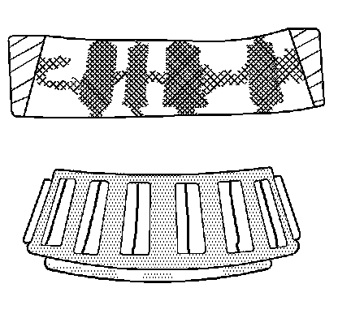
Pattern on the races and the rollers caused by fine abrasives. Clean all of the parts and the housings. Check the seals and the bearings. Replace any leaky, rough, or noisy bearings.
Abrasive Step Wear
Abrasive Step Wear:
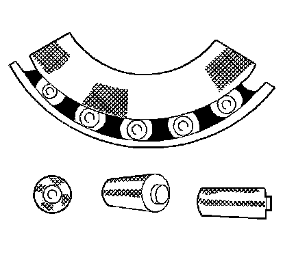
Pattern on the roller ends caused by fine abrasives. Clean all of the parts and the housings. Check the seals and the bearings. Replace any leaky, rough, or noisy bearings.
Galling
Galling:
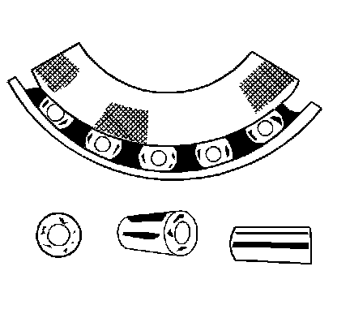
Metal smears on the roller ends due to overheating, lubricant failure, or lubricant overload. Replace the bearing. Check the seals. Check for proper lubrication.
Etching
Etching:
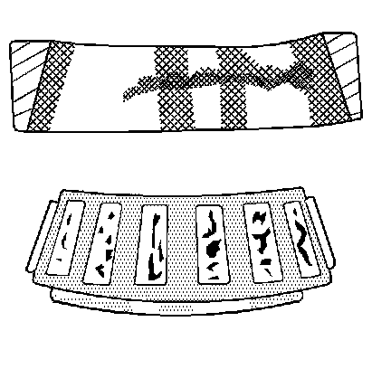
Bearing surfaces appear gray or grayish black in color, with related etching away of material usually at roller spacing. Replace the bearings. Check the seals. Check for proper lubrication.
Bent Cage
Bent Cage:
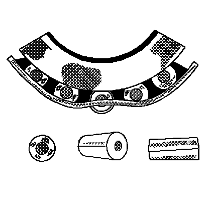
A damaged cage due to improper handling or improper tool usage. Replace the bearing.
Cage Wear
Cage Wear:
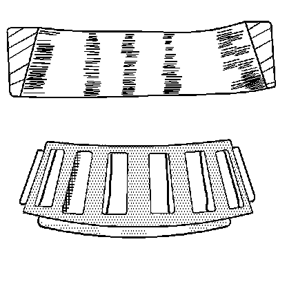
Wear around the outside diameter of the cage and the roller pockets caused by abrasive material. Wear caused from inefficient lubrication. Clean the related parts and the housings. Check the seals. Replace the bearings.
Indentations
Indentations:
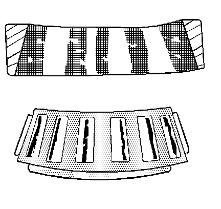
Surface depressions on the race and the rollers caused by hard particles of foreign matter. Clean all the parts and the housings. Check the seals. Replace rough or noisy bearings.
Frettage
Frettage:
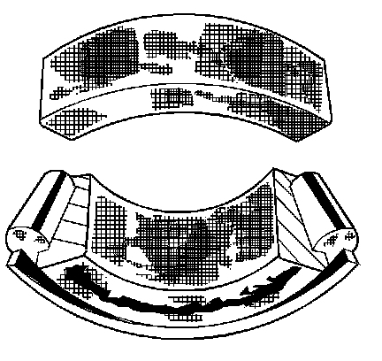
Corrosion caused by small relative movement of parts with no lubrication. Replace the bearing. Clean the related parts. Check the seals. Check for proper lubrication.
Smears
Smears:
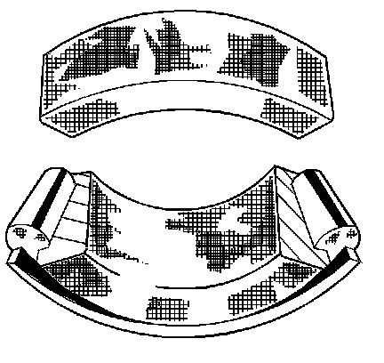
Smearing of the metal due to slippage. Slippage can be caused by the following factors:
^ Poor fits
^ Lubrication
^ Overheating
^ Overloads
^ Handling damage
Replace the bearings. Clean the related parts. Check for proper fit and lubrication.
Stain Discoloration
Stain Discoloration:
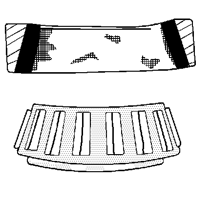
Discoloration ranging from light brown to black. This discoloration is caused from incorrect lubrication or moisture. Reuse the bearing if you can remove the stains with light polishing. Reuse the bearing if there is no evidence of overheating. Check the seals and the related parts for damage.
Heat Discoloration
Heat Discoloration:
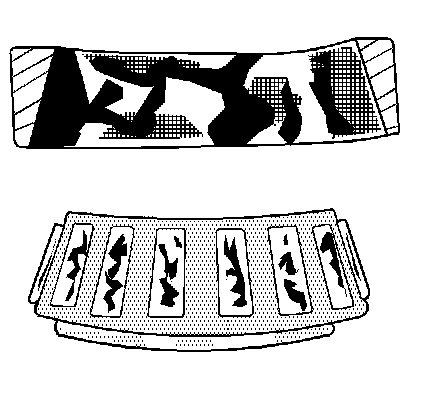
Heat discoloration ranges from faint yellow to dark blue. This discoloration results from overload or an incorrect lubricant. Excessive heat causes softening of the races or the rollers. In order to check for loss of temper on the races and the rollers, perform a file test. A file drawn over a tempered part will grab and cut the metal. A file drawn over a hard part will glide readily with no metal cutting. Replace the bearings if overheating damage is indicated. The tempered part will fail the file test. Check the seals and the other related parts.
Misalignment
Misalignment:
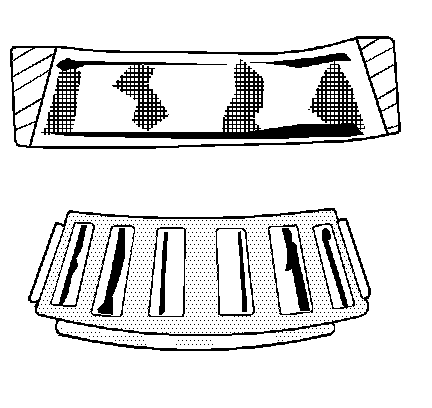
A misaligned outer race due to a foreign object. Clean the related parts. Replace the bearing. Ensure the races are properly sealed.
Cracked Inner Race
Cracked Inner Race:
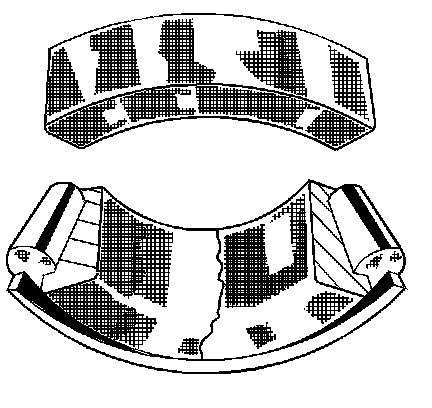
Cracked race due to improper fit, cocking, or poor bearing seats. Replace the bearing. Correct bearing seats.
Fatigue Spalling
Fatique Spalling:
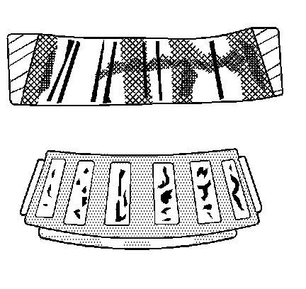
Flaked surface metal that results from fatigue. Replace the bearing. Clean all related parts.
Brinelling
Brinelling:
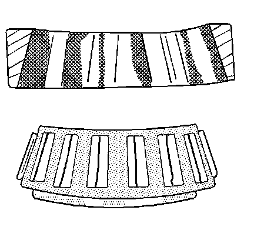
Surface indentations in the race way caused by the rollers under impact loading or caused from vibration while the bearing is not rotating. Replace a rough or noisy bearing.